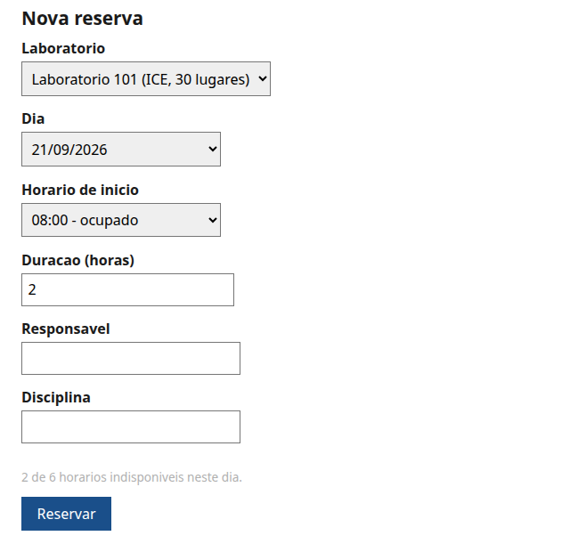

DCC061 · Engenharia de Software · Grupo 5
Quando o sistema passa na prova e mesmo assim não funciona
Gabriella Margarida Ribeiro Soares · Rafael Rocha Ribeiro
Prof. Fabrício Martins Mendonça · UFJF · 2026
Parte 1
Definição, histórico, normas, mercado e impactos da IA, como no documento-texto.
Parte 2
Um sistema de reserva de laboratórios feito duas vezes, medido ao vivo.
Parte 3
O que os dois temas dizem juntos e os limites do que medimos.
Parte 1 · Interação Homem-Computador
A disciplina que trata do projeto, da avaliação e da implementação de sistemas interativos para uso humano (ACM SIGCHI, 1992).
Usabilidade, segundo a ISO 9241-11:2018:
grau em que um sistema pode ser usado por usuários específicos para alcançar objetivos específicos com eficácia, eficiência e satisfação em um contexto de uso específico.
Eficácia: conseguiu? · Eficiência: a que custo? · Satisfação: como se sentiu?
Parte 1 · Interação Homem-Computador
Fontes: Sutherland (2003); DARPA; Computer History Museum; Nielsen (1994); ISO (2019); W3C (2023); Brasil (2015); Ceweb.br (2025).
Parte 1 · Qualidade de Software
Conformidade (Crosby, 1979) não basta: especificações são incompletas. O foco passa a ser a adequação à finalidade.
As 9 características da ISO/IEC 25010:2023
Em 2023, "usabilidade" virou "capacidade de interação" e ganhou inclusividade. A norma de qualidade passou a falar a língua da IHC.
Fontes: ISO/IEC 25010:2023; Mendonça (2026), Aula 7.
Parte 1 · Qualidade de Software
Fontes: Mendonça (2026); Minard (2020); Softex (2007); IEC; ISTQB (2023); ISO/IEC (2023).
Parte 1 · Os dois temas
| IHC | Qualidade | |
|---|---|---|
| Normas | ISO 9241-11 e 9241-210 WCAG 2.2 · NBR 17225 · eMAG Lei 13.146/2015, art. 63 | ISO/IEC 25010 · ISO 9001 CMMI 3.0 · MPS.BR ISO/IEC/IEEE 29119 |
| Ferramentas | Figma, protótipos, personas axe-core, Lighthouse, WAVE leitores de tela, testes com usuários | testes automatizados (Vitest, JUnit) Playwright, SonarQube, linters integração contínua, revisões |
Limite comum: a automação de acessibilidade encontra cerca de 57% dos problemas (Deque, 2021). 94,8% das páginas iniciais mais acessadas ainda falham em verificações automáticas da WCAG (WebAIM, 2025).
Parte 1 · Mercado de trabalho
Designer de UX/UI e de produto · pesquisador de UX · UX writer · especialista em acessibilidade · front-end
CPUX-F (UXQB) · UX Certification (NN/g) · CPACC e WAS (IAAP) · CT-UT e CT-DAT (ISTQB, nov/2026)
Analista de testes/QA · engenheiro de automação (SDET) · engenheiro de qualidade (SQA) · auditor de maturidade
CTFL 4.0 (ISTQB/BSTQB) · CSQE (ASQ) · para empresas: ISO 9001, CMMI, MPS.BR
Nenhuma certificação é exigida por lei para atuar nessas áreas no Brasil; elas comprovam conhecimento.
Parte 1 · Inteligência Artificial
usam ou planejam usar IA no desenvolvimento; 46% desconfiam da precisão, 33% confiam
Stack Overflow, 2025
de estabilidade nas entregas associada ao aumento da adoção de IA
DORA / Google, 2024
rotatividade de código projetada para 2024 vs. 2021, com mais código copiado e colado
GitClear, 2024
Em IHC: "usuários sintéticos" gerados por IA não substituem pesquisa com pessoas reais (NN/g, 2024). Em Qualidade: a ISO/IEC 25059 define qualidade para sistemas que contêm IA.
Parte 2 · O código
Um sistema pode passar nas verificações automatizadas de qualidade e ainda assim ser impossível de usar para parte das pessoas?
Reserva de laboratórios do DCC, implementada duas vezes:
versão 1 com defeitos colocados de propósito · versão 2 refatorada, mesma função.
github.com/Rafaelrr5/reserva-labs-dcc
Parte 2 · Conceitos que vamos usar
O sinal visual promete uma ação. Se o código não entrega, a pessoa tenta e falha sem entender por quê.
"A pessoa consegue reservar?" é binário: ou a reserva entra na lista, ou não entra.
Ferramentas comparam o sistema com regras conhecidas (WCAG). A resposta é confiável; a cobertura é limitada.
A verificação passa porque o elemento que seria verificado não existe.
Parte 2 · Demonstração
div com cara de botão.// versão 1 <div onClick={confirmar}>Reservar</div> // versão 2 <button type="submit">Reservar</button>

Parte 2 · Resultado medido
| Instrumento | Versão 1 | Versão 2 |
|---|---|---|
| Nota de acessibilidade (Lighthouse) | 78/100 | 100/100 |
| Violações (axe-core) | 3 regras, 8 elementos | 0 |
| Reserva só com teclado | impossível (22 paradas) | concluída (6 paradas) |
| Testes automatizados | — | 19 passando |
Medido com npm run auditoria e npm test na versão de produção.
Parte 2 · O encontro dos dois temas
A regra exige que botões tenham nome acessível. Na versão 1 não há botão, há uma div, e div não precisa receber foco.
Para o axe-core e o Lighthouse, a página está limpa. O silêncio da ferramenta foi lido como aprovação.
Só a execução da tarefa completa, uma medida de eficácia (IHC), encontrou a barreira.
A cobertura de uma ferramenta é definida pelas perguntas que ela faz.
Parte 2 · Manutenção
Com uma reserva das 08:00 às 10:00 na tela, a versão 1:
// a mesma regra copiada em 3 lugares; a terceira diverge ini < rFim && rIni < fim // cópias 1 e 2 ini <= rFim && rIni <= fim // cópia 3
Nenhuma auditoria de interface vê isso. Só um teste que conhece a regra, possível porque a versão 2 isolou a regra em um único módulo.
Trocar <= por < corrige o sintoma; a causa é existirem três cópias.
Parte 3 · Conclusão
Limites: dois casos, defeitos plantados de propósito, sem teste com usuários reais. Os números valem para estas duas versões; o método se generaliza.
Referências principais
Lista completa, com links, no documento-texto entregue no Classroom.
Perguntas?
Código e documentação: github.com/Rafaelrr5/reserva-labs-dcc
Gabriella Margarida Ribeiro Soares · Rafael Rocha Ribeiro